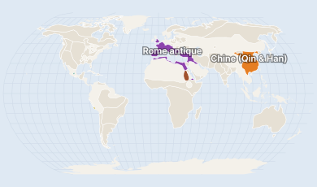

PréhistoireAntiquitéMoyen ÂgeModerneContemporaine

Carte historique la plus proche : 100. Touchez un territoire pour son aperçu.
Sur cette carte · 6 civilisations

Carte historique la plus proche : 100. Touchez un territoire pour son aperçu.
Sur cette carte · 6 civilisations